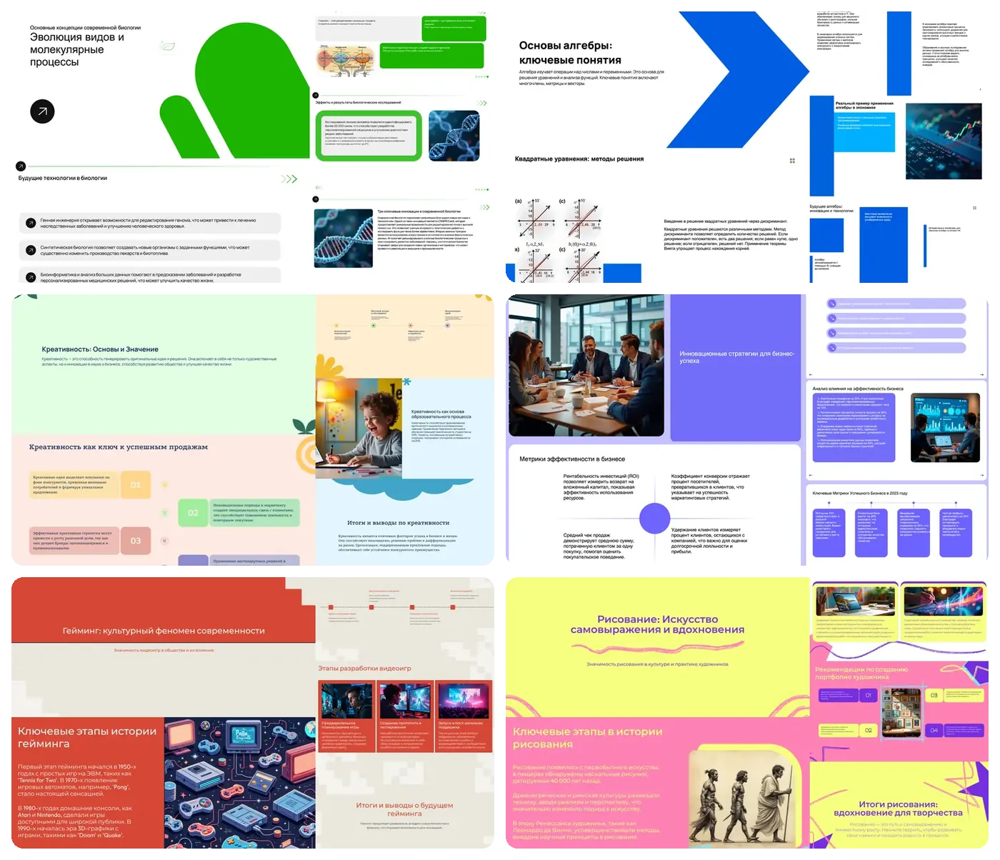
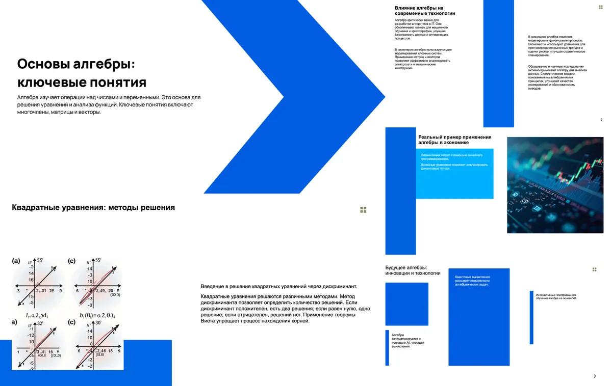
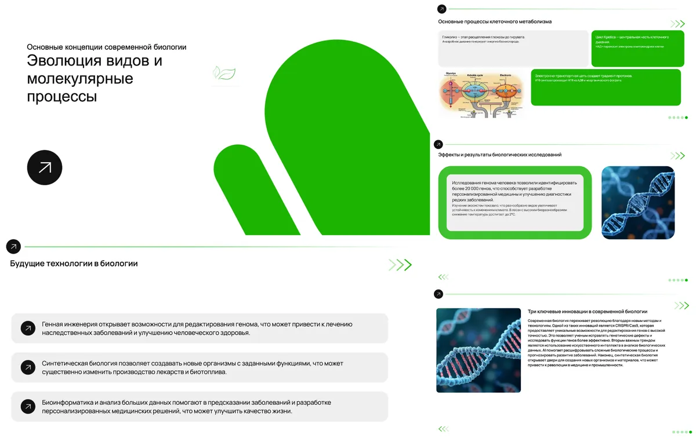

Prezentashki: a topic goes in, a finished deck comes out
Prezentashki.ru builds a presentation on its own. Once an order is paid, the server writes the text, generates the images, lays the slides into a template and hands back a PDF or PPTX. No one touches the pipeline, and from July to September 7 it had zero generation failures. For my marketing partner I also built a Telegram assistant that took ad reporting off his plate.
The business problem
Students, teachers and parents need a presentation fast and on a budget. With the service it takes a few clicks: pick a topic, a slide count and a template, pay, get a finished deck, tweak it in the editor, download PDF or PPTX.
We are a team of two. My partner runs marketing; I own all of engineering and product. Growth comes from paid ads, which sets two requirements. Generation must never wait for a person, no matter how many orders come in. And my partner needs ad and revenue numbers without asking a developer or building spreadsheets.
What I built
At the center is an LLM pipeline running in production. The server starts it after payment, and it takes the order all the way to a finished deck with no manual steps.
- Ordering and payment. A landing page with a “topic + slides + template” form; online payment by card, SBP (Russia's instant bank transfers) or subscription.
- Order states. awaiting_payment → paid → generating → ready or failed. The server starts generation; the frontend only polls for status.
- Reliability. Idempotency plus a database lock: one order, one generation, even if the request arrives twice. A cron job runs every ~30 seconds, finds stuck orders and restarts them.
- AI pipeline. Outline from the topic → GPT-4o and 4o-mini write the slide text and structure → HTML template → Flux images, about 6 per deck on average → export. The topic goes through exactly as the user typed it. That rule never bends: the deck is about what was asked, nothing else.
- Editor and export. In-browser slide editing, PDF via Puppeteer, PPTX via pptxgenjs.
- Templates. A catalog of HTML templates and my own exporter that brings templates over from Figma.
- Speaker notes. A separate paid feature: GPT-4o writes the talk track for each slide.
- Solo infrastructure. Blue-green deploys on Docker Compose behind nginx, prod and preprod, tag-based releases through GitHub Actions, images pinned by digest, daily backups with an offsite copy in S3. I write the code with Claude Code and Codex agents, using skills for development and releases.
A Telegram assistant for my partner
My partner is a marketer, not an engineer. He needs answers about the business and the ads: what a customer costs, what share of revenue goes to ads, how profit looks. I built him a Telegram assistant that took that reporting routine off his plate.
- Code does the math. Deterministic scripts calculated CPA, ad spend share and P&L from Yandex Direct and Yandex Metrica data. The model only put the numbers together and explained them.
- Changes need a tap. Any change to the ad account and any deploy went out as a request with ✅/❌ buttons in the chat. Nothing changed until a person tapped.
- Voice works too. Voice messages were transcribed, so he could ask on the go.
- model
- plain code, no model
- person
- external services
Results
- 2,600+sign-ups as of July 25, 2026
- 1,400+online payments as of July 25, 2026
- 38%of sign-ups go on to pay, as of July 25, 2026
- ~16,000 slidesgenerated as of July 25, 2026
- 88 smedian time to generate a deck, p90 149 s (August 2026)
- 0 failuresin generation and 0 orders left without a deck, July through Sept 7, 2026
- 11.3%of buyers came back and bought again, as of Sept 7, 2026
- 945 commitssince May 2, 2026; one engineer working with agents
The service covers its own costs. Sign-ups, payments and slide counts come from a production database snapshot on July 25, 2026; speed and failure figures come from the August report and data through September 7, 2026.
What it looks like



Stack
- Models
- OpenAI GPT-4o and 4o-mini for text; Flux for images
- Backend
- Node 22, TypeScript, Express → Hono, Sequelize, PostgreSQL, Zod, OpenAPI
- Frontend
- React 19, Vite, TanStack Query
- Export
- Puppeteer (PDF), pptxgenjs (PPTX), HTML templates from Figma
- Payments
- CloudPayments: cards, SBP, subscriptions
- Infrastructure
- Docker Compose, nginx, blue-green deploys, GitHub Actions, GHCR, S3 backups
- Assistant
- Telegram Bot API, Yandex Direct and Metrica APIs
- Development
- Claude Code and Codex with development and release skills